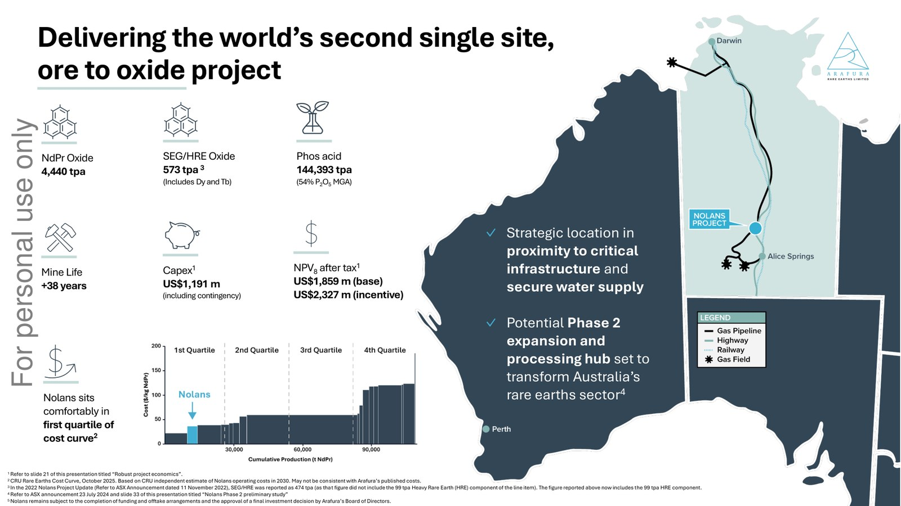
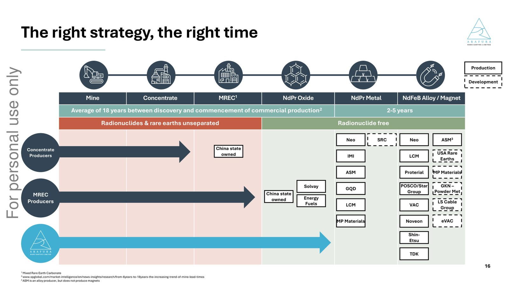
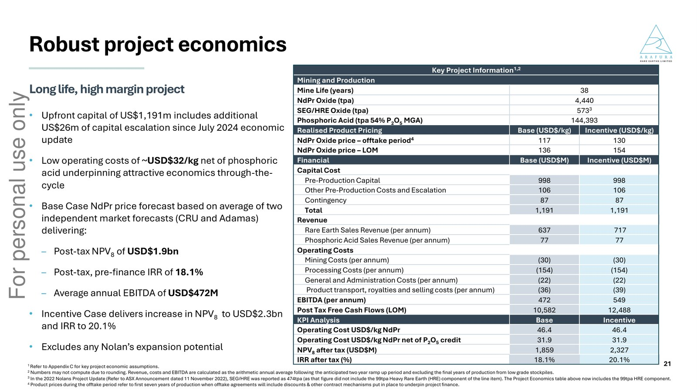

ARAFURA RARE EARTHS 🇦🇺 (ASX:ARU)
Model biznesowy w obrazach

Nolans jako zintegrowany projekt ore-to-oxide: lokalizacja, docelowa produkcja 4 440 tpa tlenku NdPr, 38-letni okres eksploatacji i pierwszy kwartyl kosztowy. Źródło: Arafura Rare Earths, prezentacja inwestorska (październik 2025).

Pozycja producentów w łańcuchu wartości: od koncentratu przez MREC, tlenek i metal NdPr po stop i magnes NdFeB. Źródło: Arafura Rare Earths, prezentacja inwestorska (październik 2025).

Ekonomika projektu: NPV po opodatkowaniu, IRR 18,1%, capex i koszt operacyjny NdPr w scenariuszu bazowym i motywacyjnym. Źródło: Arafura Rare Earths, prezentacja inwestorska (październik 2025).
W kontekście: Wydobycie (upstream)
Czym jest spółka. Arafura Rare Earths rozwija Nolans, przedprodukcyjny projekt REE położony 135 km od Alice Springs w Terytorium Północnym. Projekt ma połączyć kopalnię, koncentrację oraz separację i rafinację w jednym zakładzie ore-to-oxide. Oznacza to obecność zarówno w upstreamie, czyli wydobyciu, jak i w midstreamie, czyli chemicznym przetwarzaniu rudy do tlenków. Produkcja magnesów pozostaje poza zakresem projektu.
Baza surowcowa. Nolans posiada rezerwy 29,5 mln ton rudy o zawartości 2,9% TREO oraz planowany początkowy okres eksploatacji wynoszący 38 lat. Zasoby szacowane są na 56 mln ton przy 2,6% TREO, lecz ta druga wartość pochodzi ze słabego źródła i wymaga większej ostrożności.
Mieszanka Nolans wyróżnia się udziałem NdPr wynoszącym 26,4% TREO. Złoże zawiera również 11-13% P2O5, co pozwala projektować kwas fosforowy jako współprodukt, a nie wyłącznie odpad procesu. Docelowa produkcja obejmuje 4 440 tpa tlenku NdPr, 573 tpa ciężkich REE oraz 144 393 tpa kwasu fosforowego.
Status realizacji. Spółka podjęła FID 21.05.2026, a rozpoczęcie budowy zaplanowała na wrzesień 2026. Nolans ma być pierwszym w Australii w pełni zintegrowanym zakładem ore-to-oxide, a 01.06.2026 został pierwszym projektem objętym statusem Significant Project na podstawie Territory Coordinator Act 2025.
Według danych projektu budowa ma zapewnić ponad 600 miejsc pracy, działalność operacyjna około 350 stałych stanowisk, a prognozowany wkład w Gross Territory Product w ciągu początkowych 38 lat eksploatacji wynosi 25,2 mld AUD. Są to prognozy oddziaływania gospodarczego, nie zaraportowane wyniki działalności.
Znaczenie biznesowe: Nolans ma przekształcić Arafurę z właściciela złoża w zintegrowanego dostawcę tlenków metali ziem rzadkich, ale spółka pozostaje przed rozpoczęciem budowy i nie ma jeszcze historii produkcyjnej.
Dla inwestora: najważniejsze dane opisują docelową skalę i jakość projektu, natomiast ryzyko analityczne koncentruje się na przejściu od FID do budowy, uruchomienia instalacji chemicznej i stabilnej produkcji.
W kontekście: Dywersyfikacja i budowa łańcucha poza Chinami
Po co powstaje Nolans. Chiny odpowiadały w 2025 r. za blisko 70% światowej produkcji górniczej REE, a ich udział w separacji i przetwarzaniu jest szacowany na około 90%. Nolans ma połączyć australijskie wydobycie z australijską separacją, dzięki czemu materiał nie musiałby być wysyłany do Chin w celu uzyskania tlenków nadających się do dalszego wykorzystania.
Docelowe 4 440 tpa tlenku NdPr z Nolans ma odpowiadać za około 4% globalnej podaży NdPr. Jednocześnie Arafura prognozuje wzrost światowej konsumpcji REE do 231 000 ton TREO w 2032 r. Jest to ekspozycja przede wszystkim na materiały magnetyczne, lecz nie na samą produkcję magnesów.
Geograficzny układ odbiorców. Portfel kontraktów i rozmów obejmuje południowokoreańskie Hyundai i Kia, niemiecko-hiszpańskiego producenta turbin Siemens Gamesa, europejską i północnoamerykańską działalność Traxys, australijską Critical Minerals Strategic Reserve oraz partnera z Indii. Taki układ poszerza geograficzną bazę popytu, ale nie usuwa zależności cenowej od Chin. Cena w europejskiej umowie Traxys ma być ustalana z odniesieniem do benchmarku NdPr Ex Works China.
Indyjski program wsparcia magnesów ma wartość 7 280 crore INR, czyli około 800 mln USD, i zakłada łączną produkcję 6 000 tpa w ramach 5 projektów. Na tym tle Arafura zawarła umowę sprzedaży 500 tpa NdPr na 5 lat, przy czym beneficjenci programu mają zostać wyznaczeni w Q1 FY2027. Status tej umowy jako bezwarunkowo wiążącego odbioru: NIE UJAWNIONE.
Słabe źródło przewiduje spadek udziału Chin w przetwarzaniu z około 90% do około 75% w 2028 r. Prognoza pokazuje kierunek potencjalnej dywersyfikacji, ale nie powinna być traktowana jak twarda baza ilościowa.
Znaczenie biznesowe: Arafura ma budować pozachiński odcinek wydobycia i separacji, lecz downstreamowa produkcja magnesów oraz część mechanizmu ustalania cen pozostaną poza jej kontrolą.
Dla inwestora: geograficzna dywersyfikacja dostaw nie jest równoznaczna z pełną niezależnością ekonomiczną, ponieważ zachodnie umowy mogą nadal przenosić chiński benchmark cenowy do przychodów Arafury.
W kontekście: Mapa kluczowych graczy w łańcuchu
Arafura i Nolans. Spółka zajmuje planowaną pozycję pomiędzy kopalnią a producentem magnesów: ma wydobywać rudę, wytwarzać koncentrat, prowadzić separację i sprzedawać gotowe tlenki NdPr oraz ciężkich REE. Nie posiada w ujawnionym modelu produkcji magnesów ani końcowych wyrobów motoryzacyjnych lub energetycznych.
Odbiorcy przemysłowi i handlowi.
- Hyundai i Kia tworzą największy blok offtake, obejmujący 1 500 tpa NdPr i 42% docelowego wiążącego wolumenu.
- Siemens Gamesa ma odpowiadać za 520 tpa i 15% celu, tworząc ekspozycję na łańcuch dostaw turbin wiatrowych.
- Traxys Europe obejmuje przedział 100-300 tpa na 5 lat oraz opcję dodatkowych 200 tpa wykonywaną przez Arafurę.
- Traxys North America zakontraktował 500 tpa NdPr i 7,5 tpa DyTb na 5 lat, z opcją przedłużenia o 2 lata.
- Critical Minerals Strategic Reserve ma odbierać do 500 tpa, odpowiadających za 14% docelowego wolumenu wiążącego.
- Potencjalny OEM lub Tier 1 reprezentuje dalsze 250 tpa i 7% celu, lecz zaangażowanie jest niewiążące.
Państwo i instytucje finansowe. Po stronie australijskiej występują NRFC, EFA, NAIF oraz strategiczna rezerwa surowcowa. Pakiet uzupełniają niemiecki KfW lub GRMF, kanadyjski EDC i amerykański US EXIM. Role tych podmiotów są różne: od kapitału i obligacji zamiennych, przez potencjalny dług senioralny, po popyt generowany przez państwową rezerwę.
Producenci już obecni na rynku. Lynas sprzedał 6 555 ton NdPr w FY2025, co oznaczało wzrost o 18% r/r. MP Materials wyprodukował 2 599 ton NdPr w 2025 r., podwajając wynik z 2024 r., ale ta druga informacja pochodzi ze słabego źródła. Na ich tle Arafura dysponuje celem 4 440 tpa, a nie bieżącą produkcją.
Znaczenie biznesowe: Arafura ma być dostawcą materiału pośredniego dla motoryzacji, energetyki wiatrowej, handlu surowcowego i przyszłych producentów magnesów, przy znaczącym udziale instytucji publicznych w finansowaniu i odbiorze.
Dla inwestora: mapę graczy należy czytać jako połączenie przyszłych klientów, pośredników i finansujących, podczas gdy Lynas i MP Materials posiadają już dane o rzeczywistej sprzedaży lub produkcji.
Ekspozycja na REE w liczbach
Model czystej ekspozycji. Arafura jest spółką przedprodukcyjną opartą na jednym projekcie, dlatego działalność związana z REE stanowi 100% jej profilu operacyjnego. Przychód operacyjny i dynamika przychodu r/r: NIE UJAWNIONE. Spółka nie prowadzi jeszcze sprzedaży produktu, a wykazany pozostały przychód H1 FY2025 wyniósł 705 559 AUD.
Wynik i bilans. Strata netto FY2025 wyniosła 19 242 337 AUD, wobec 100 974 432 AUD w FY2024. Poprzedni rok zawierał koszty prac wstępnych odnoszone bezpośrednio do rachunku wyników, dlatego zmiana straty nie jest prostym miernikiem poprawy działalności produkcyjnej. W samym H1 FY2025 strata netto wyniosła 18 851 865 AUD.
Historyczna EBITDA operacyjna: NIE UJAWNIONE. Model projektu przewiduje natomiast średnioroczną EBITDA 472 mln USD, ale jest to wynik bazowego scenariusza projektowego, a nie rezultat już osiągnięty.
Suma aktywów na 31.12.2024 wynosiła 172 525 335 AUD, a gotówka 44 858 193 AUD. Stan gotówki wzrósł z 27 mln AUD na 30.06.2025 do 90 mln AUD na 30.09.2025 i 571 mln AUD na 31.12.2025, po czym obniżył się do 561 mln AUD na 31.03.2026. Zmiany salda odzwierciedlają finansowanie projektu oraz wydatki przedprodukcyjne, nie przepływy z eksploatacji kopalni.
Docelowy profil produkcji.
- Tlenek NdPr: 4 440 tpa.
- Ciężkie REE: 573 tpa.
- Kwas fosforowy: 144 393 tpa.
- Magnesy: NIE UJAWNIONE, ponieważ ich produkcja nie należy do zakresu Nolans.
Ekonomika według aktualizacji z czerwca 2026. Łączny capex Nolans wynosi 1 191 mln USD, w tym 998 mln USD kapitału przedprodukcyjnego, 106 mln USD pozostałych kosztów przedprodukcyjnych i eskalacji oraz 87 mln USD rezerwy.
pie title Struktura capexu Nolans według aktualizacji z czerwca 2026 "Kapitał przedprodukcyjny": 998 "Pozostałe koszty i eskalacja": 106 "Rezerwa": 87
Źródło: Arafura Rare Earths, aktualizacja ekonomiki Nolans z czerwca 2026, wartości w mln USD.
Bazowy model wskazuje NPV po opodatkowaniu na poziomie 1 859 mln USD przy stopie dyskontowej 8% oraz IRR po opodatkowaniu wynoszącą 18,1%. Założona cena tlenku NdPr to 117 USD/kg w pierwszych 7 latach okresu offtake i średnio 136 USD/kg w całym life-of-mine. Są to założenia modelowe, nie zagwarantowane ceny sprzedaży.
Gotówkowy koszt operacyjny NdPr oszacowano na 43,7 USD/kg brutto oraz 28,6 USD/kg po uwzględnieniu kredytów ze sprzedaży fosforanu. Modelowany roczny przychód z kwasu fosforowego wynosi 77 mln USD. Współprodukt ma więc nie tylko zwiększać przychód, ale też obniżać raportowany koszt netto NdPr.
Znaczenie biznesowe: profil finansowy Arafury jest dziś profilem finansowania i budowy aktywa, natomiast produkcja, EBITDA oraz ekonomika jednostkowa pozostają wartościami docelowymi zależnymi od uruchomienia Nolans.
Dla inwestora: danych bilansowych i ponoszonej straty nie należy mieszać z NPV, IRR i EBITDA projektu, ponieważ pierwsze opisują obecną spółkę przedprodukcyjną, a drugie scenariusz przyszłej eksploatacji.
Kluczowe umowy - co znaczą
Wolumen objęty umowami. Docelowy wiążący offtake wynosi 3 570 tpa, czyli 80% nominalnej produkcji 4 440 tpa. Na 30.09.2025 zabezpieczono 2 320 tpa, odpowiadające 66% ówczesnego celu 3 550 tpa. Różnica między tymi wielkościami wynika również z dat raportowania i zmiany celu, dlatego nie należy traktować ich jako jednoczesnego obrazu portfela.
- Hyundai i Kia: 1 500 tpa NdPr, czyli 42% celu. Jest to największy pojedynczy blok przyszłego odbioru i umowa wiążąca. Wartość kontraktu: NIE UJAWNIONE.
- Siemens Gamesa: 520 tpa NdPr, czyli 15% celu. Umowa jest zaliczana do wiążącego portfela. Wartość kontraktu: NIE UJAWNIONE.
- Traxys Europe: minimum 100 tpa i maksimum 300 tpa przez 5 lat, z możliwością dodania 200 tpa według decyzji Arafury. Cena jest kontraktowa, lecz szeroko oparta na NdPr Ex Works China. Poziom ceny i przedpłaty: NIE UJAWNIONE.
- Traxys North America: 500 tpa NdPr oraz 7,5 tpa DyTb przez 5 lat, z możliwością przedłużenia o 2 lata. NdPr ma spełniać specyfikację co najmniej 99,0% TREO. Wartość kontraktu: NIE UJAWNIONE.
- Critical Minerals Strategic Reserve: do 500 tpa NdPr, czyli 14% celu. Jest to państwowy mechanizm odbioru, a nie zwykła umowa popytu przemysłowego. Wartość i formuła ceny: NIE UJAWNIONE.
- Partner indyjski: 500 tpa NdPr przez 5 lat. Beneficjenci powiązani z indyjskim programem wsparcia mają zostać wskazani w Q1 FY2027. Bezwarunkowo wiążący status, cena i wartość: NIE UJAWNIONE.
- Potencjalny OEM lub Tier 1: 250 tpa, czyli 7% celu. Zaangażowanie jest niewiążące, więc nie ma tej samej jakości kontraktowej co podpisany offtake.
Finansowanie kapitałowe i zamienne. NRFC podpisał dokumentację wiążących obligacji zamiennych o wartości nominalnej 200 mln AUD z terminem zapadalności wynoszącym 15 lat. Oprocentowanie ustalono na BBSY 3M plus 3,0% w latach 0-7 oraz BBSY 3M plus 6,0% w latach 7-15. Cena konwersji zawiera premię 40% wobec ceny referencyjnej.
Łączne wiążące zobowiązania kapitałowe związane z Nolans, wraz z kapitałem już pozyskanym przez spółkę, wynoszą 911 mln AUD. Osobny pakiet cornerstone equity EFA i niemieckiego funduszu przyniósł około 230 mln AUD nowego kapitału po cenie emisyjnej 0,2447 AUD za akcję, odpowiadającej 20-dniowej VWAP pomniejszonej o 10%. Niemiecka część zaangażowania wyniosła 50 mln EUR.
Elementy warunkowe i niewiążące.
- EFA udzieliła warunkowej akceptacji inwestycji kapitałowej w wysokości 100 mln USD.
- EDC utrzymuje warunkowe zobowiązanie dotyczące długu senioralnego w wysokości 300 mln USD.
- US EXIM wystawił niewiążący list intencyjny dotyczący potencjalnego współfinansowania w wysokości 300 mln USD.
- Na 30.06.2026 kredytodawcy nadal przechodzili przez ostateczne procedury zatwierdzeń kredytowych.
- Historyczna skala australijskich grantów i pożyczek wspierających projekt została oszacowana na ponad 1,04 mld AUD, lecz informacja pochodzi ze źródła wtórnego.
Mechanizm take-or-pay, gwarantowana cena minimalna, przedpłaty odbiorców oraz pełna wartość przychodowa umów offtake: NIE UJAWNIONE.
Znaczenie biznesowe: portfel łączy wiążące wolumeny odbioru i kapitału z finansowaniem warunkowym oraz niewiążącym, więc sama suma komunikowanych kwot nie jest równoznaczna z pełnym zamknięciem finansowania.
Dla inwestora: najtwardsze elementy to podpisane offtake, kapitał i obligacje NRFC, natomiast list US EXIM, warunkowy dług EDC i końcowe zgody kredytodawców reprezentują niższy poziom pewności wykonania.
Pozycja rynkowa i udziały
Docelowy udział. Nolans ma potencjalnie dostarczać około 4% światowej podaży NdPr. Jest to udział projektowany dla przyszłej produkcji, a nie obecny udział Arafury w rynku. Globalny ranking producentów: NIE UJAWNIONE.
Punkt odniesienia dla rynku. Światowa produkcja tlenku NdPr przekroczyła 50 000 ton w 2023 r., ale informacja pochodzi ze słabego źródła. Wartość globalnego rynku NdPr Oxide została oszacowana na 5 397 mln USD w 2024 r., również przez źródło słabe. Arafura prognozuje natomiast konsumpcję REE na poziomie 231 000 ton TREO w 2032 r.
Dominacja Chin. W 2025 r. Chiny odpowiadały za blisko 70% globalnej produkcji górniczej REE, a ich udział w przetwarzaniu i separacji był szacowany na około 90%. Oznacza to, że udział Arafury w rynku należy definiować nie tylko jako procent globalnego NdPr, lecz również jako część podaży wydobywanej i separowanej poza Chinami.
Prognoza spadku chińskiego udziału w przetwarzaniu do około 75% w 2028 r. pochodzi ze słabego źródła i nie daje podstaw do precyzyjnego określenia przyszłego udziału Arafury.
Znaczenie biznesowe: skala Nolans byłaby zauważalna na rynku NdPr, ale nie zmieniałaby samodzielnie strukturalnej przewagi Chin w globalnym wydobyciu i separacji.
Dla inwestora: najbardziej wiarygodną miarą pozycji jest docelowe około 4% globalnej podaży NdPr, podczas gdy wyceny rynku i prognozy udziału Chin mają słabszą jakość źródłową.
Mechanika konkurencji - na osiach
Oś jakości złoża. Rezerwy Nolans mają 2,9% TREO, wobec 6,44% w rezerwach Mt Weld należących do Lynas oraz 6,35% w rezerwach Mountain Pass według danych na 30.09.2021. Historyczna charakterystyka Mountain Pass wskazuje również klasę przekraczającą 8% REO. Wyższa zawartość oznacza co do zasady mniej materiału skalnego przypadającego na jednostkę zawartych pierwiastków, ale porównywalne odzyski i pełne koszty przerobu: NIE UJAWNIONE.
Oś kosztu i współproduktu. Arafura modeluje gotówkowy koszt NdPr na 43,7 USD/kg brutto oraz 28,6 USD/kg po kredytach z fosforanu. Przewaga modelowa nie wynika więc wyłącznie z jakości rudy, lecz także z monetyzacji 144 393 tpa kwasu fosforowego i zakładanego przychodu 77 mln USD rocznie. Są to koszty i przychody projektowane, a nie potwierdzone eksploatacją.
Oś ceny. Średnia cena sprzedaży NdPr przez Lynas w H1 FY2026 wyniosła 68,4 USD/kg. Arafura przyjmuje 117 USD/kg w pierwszych 7 latach offtake oraz średnio 136 USD/kg w całym okresie eksploatacji. Różnica pokazuje wysoką zależność modelu ekonomicznego od przyszłej ścieżki cen, ale nie przesądza o cenach, które Arafura faktycznie uzyska.
MP Materials korzysta z 10-letniego porozumienia z amerykańskim Departamentem Obrony, które od Q4 2025 zapewnia mechanizm floor na poziomie 110 USD/kg NdPr. Konstrukcja ma formę contract-for-difference, a Departament Obrony otrzymuje 30% zysku ponad ustalony próg. Arafura nie ujawniła analogicznej gwarancji ceny minimalnej.
Oś integracji. Nolans ma łączyć kopalnię, koncentrację i separację w Australii, eliminując konieczność chińskiej separacji dla własnego produktu. Jednocześnie brak produkcji magnesów oznacza, że Arafura zatrzymuje się przed końcowym etapem łańcucha. Partnerzy przemysłowi i program indyjski mają wypełniać downstream, lecz kontrola Arafury nad tym etapem: NIE UJAWNIONE.
Oś zależności od Chin. Fizyczny łańcuch Nolans ma działać poza Chinami, ale cena europejskiego kontraktu Traxys jest szeroko oparta na benchmarku NdPr Ex Works China. Arafura ogranicza więc chińską zależność operacyjną, lecz nie usuwa chińskiego wpływu na cenę rozliczeniową.
Oś skali i doświadczenia. Lynas sprzedał 6 555 ton NdPr w FY2025, o 18% więcej r/r. MP Materials wyprodukował 2 599 ton w 2025 r. według słabego źródła. Docelowe 4 440 tpa Arafury lokuje projekt pomiędzy tymi wolumenami, ale bez porównywalnej historii rozruchu, uzysków i jakości produktu.
Oś wsparcia państwa i finansowania. Historyczne australijskie wsparcie Arafury przekraczało 1,04 mld AUD według źródła wtórnego, podczas gdy MP Materials otrzymał mechanizm ceny minimalnej 110 USD/kg. Model DCF Nolans został przygotowany na bazie ungeared, czyli bez długu, mimo negocjowanego rzeczywistego pakietu dłużnego obejmującego instytucje publiczne. Koszt finansowania i struktura zadłużenia nie są więc odzwierciedlone w projektowych NPV i IRR w taki sam sposób jak ekonomika operacyjna.
Znaczenie biznesowe: Arafura odpowiada na niższą klasę złoża integracją przetwarzania i wartością współproduktu, lecz konkurenci mają wyższą zawartość TREO, bieżącą produkcję oraz w przypadku MP Materials państwowy mechanizm ochrony ceny.
Dla inwestora: porównanie nie powinno sprowadzać się do kosztu 28,6 USD/kg, ponieważ jest to wartość po kredytach z fosforanu i przed potwierdzeniem operacyjnym, podczas gdy część danych konkurentów opisuje rzeczywistą sprzedaż.
Koncentracja odbiorców i ryzyka
Koncentracja przychodów historycznych. Udział największych klientów w obecnych przychodach: NIE UJAWNIONE, ponieważ Arafura nie prowadzi jeszcze sprzedaży produktu. Dostępne dane opisują koncentrację przyszłego wolumenu offtake, a nie zaraportowanego przychodu.
Hyundai i Kia. Jedna grupa koncernowa odpowiada za 1 500 tpa, czyli 42% celu wiążącego offtake wynoszącego 3 570 tpa. Jeżeli harmonogramy zakupowe grupy, zapotrzebowanie motoryzacyjne lub wykonanie umowy ulegną zmianie, największy pojedynczy blok planowanego odbioru zostanie dotknięty równocześnie.
Critical Minerals Strategic Reserve. Do 500 tpa, czyli 14% celu, zależy od mechanizmu rządowej rezerwy strategicznej. Ekspozycja ogranicza konieczność natychmiastowego znalezienia prywatnego odbiorcy dla tego wolumenu, ale przenosi część ryzyka na decyzje polityczne, budżetowe i operacyjne państwa.
Ryzyko budowy i domknięcia finansowania. Capex wynosi 1 191 mln USD, rozpoczęcie budowy zaplanowano na wrzesień 2026, a na 30.06.2026 kredytodawcy nadal prowadzili końcowe procedury zatwierdzeń. Warunkowe 100 mln USD EFA i 300 mln USD EDC oraz niewiążący list US EXIM na 300 mln USD nie mają tej samej pewności co kapitał już pozyskany albo wiążąco zadeklarowany. Opóźnienie zgód może przesunąć finansowanie wydatków, zamówienia urządzeń i harmonogram budowy.
Ryzyko cyklu cenowego. Model zakłada średnio 136 USD/kg NdPr w całym okresie eksploatacji oraz 117 USD/kg w pierwszych 7 latach offtake, podczas gdy Lynas raportował 68,4 USD/kg w H1 FY2026. Jeżeli ceny nie zbliżą się do założeń Arafury, niższy przychód jednostkowy przełoży się na słabszą EBITDA, NPV i IRR projektu.
Ryzyko chińskiego benchmarku. Europejski kontrakt Traxys odnosi cenę do NdPr Ex Works China. Mechanizm pozwala sprzedawać fizyczny materiał z Australii zachodniemu odbiorcy, ale nadal przenosi warunki cenowe kształtowane na dominującym rynku chińskim do rozliczeń Arafury.
Ryzyko techniczne i jakościowe. Nolans ma produkować materiał o specyfikacji co najmniej 99,0% TREO dla Traxys North America. Spółka nie ma jeszcze komercyjnej historii produkcji, więc osiągnięcie wymaganej czystości, uzysków i wolumenu 4 440 tpa musi zostać potwierdzone podczas rozruchu. Dane o karach za niedostarczenie lub niespełnienie jakości: NIE UJAWNIONE.
Ryzyko pojedynczego aktywa. Cała ekspozycja operacyjna jest skoncentrowana w Nolans. Problemy z kopalnią, instalacją separacji, infrastrukturą lub harmonogramem dotknęłyby 100% przyszłego profilu produkcyjnego spółki, ponieważ alternatywny projekt produkujący przychody: NIE UJAWNIONE.
Ryzyko rozwodnienia i warunków obligacji. Obligacje NRFC mają wartość 200 mln AUD, premię konwersji 40% i maksymalny próg udziału głosów NRFC wynoszący 19,99%. Konwersja może zwiększyć liczbę akcji i udział NRFC kosztem udziałów dotychczasowych akcjonariuszy, choć dokładna skala zależy od ceny referencyjnej i momentu konwersji. Maksymalna dopuszczalna długość zawieszenia obrotu akcjami bez naruszenia warunków obligacji wynosi 10 dni, co tworzy dodatkowe ryzyko kontraktowe w razie przedłużonych problemów z notowaniem lub ujawnieniami.
Ryzyko jakości modelu finansowego. NPV 1 859 mln USD, IRR 18,1% i EBITDA 472 mln USD pochodzą z bazowego modelu spółki przygotowanego na bazie ungeared. Wartości nie uwzględniają finansowania dłużnego jako elementu struktury DCF, mimo że rzeczywisty rozwój Nolans ma korzystać z długu i instrumentów zamiennych.
Znaczenie biznesowe: największe ryzyka tworzą wspólny łańcuch zależności, w którym finansowanie umożliwia budowę, rozruch warunkuje dostawy, a ceny NdPr i koncentracja offtake decydują o zdolności projektu do generowania zakładanych przepływów.
Dla inwestora: kluczowe jest oddzielanie podpisanych wolumenów od rzeczywistych przychodów oraz wyników modelowych od danych operacyjnych, których Arafura jako spółka przedprodukcyjna jeszcze nie posiada.
Słowniczek
- REE - metale ziem rzadkich, grupa pierwiastków wykorzystywanych między innymi w magnesach trwałych, elektronice i energetyce.
- ore-to-oxide - zintegrowany model obejmujący drogę od wydobytej rudy do oczyszczonych tlenków metali ziem rzadkich.
- upstream - początkowa część łańcucha wartości obejmująca złoże, wydobycie i podstawowe wzbogacanie rudy.
- midstream - środkowa część łańcucha obejmująca chemiczne przetwarzanie, separację i rafinację pierwiastków.
- TREO - łączna zawartość tlenków metali ziem rzadkich w rudzie lub produkcie.
- NdPr - mieszanina neodymu i prazeodymu, podstawowych składników wysokowydajnych magnesów trwałych.
- P2O5 - pięciotlenek fosforu, standardowa miara zawartości fosforanów w surowcu.
- FID - finalna decyzja inwestycyjna zatwierdzająca przejście projektu do fazy realizacji.
- tpa - ton rocznie.
- DyTb - łączone oznaczenie dysprozu i terbu, ciężkich pierwiastków ziem rzadkich poprawiających odporność magnesów na wysoką temperaturę.
- offtake - umowa dotycząca przyszłego odbioru określonego wolumenu produktu.
- OEM lub Tier 1 - producent końcowego wyrobu albo jego bezpośredni, kluczowy dostawca komponentów.
- EBITDA - wynik przed odsetkami, podatkami, amortyzacją rzeczową i amortyzacją wartości niematerialnych.
- capex - nakłady inwestycyjne potrzebne do budowy i uruchomienia aktywa.
- NPV - bieżąca wartość netto prognozowanych przepływów pieniężnych po zastosowaniu stopy dyskontowej.
- IRR - wewnętrzna stopa zwrotu projektu wynikająca z prognozowanych przepływów pieniężnych.
- life-of-mine - pełny zakładany okres eksploatacji kopalni.
- BBSY - australijska referencyjna stopa procentowa wykorzystywana przy ustalaniu oprocentowania instrumentów finansowych.
- cornerstone equity - kapitał obejmowany przez kluczowego inwestora mającego zakotwiczyć większą emisję.
- VWAP - średnia cena akcji ważona wolumenem obrotu w określonym okresie.
- take-or-pay - umowa zobowiązująca odbiorcę do odebrania produktu albo zapłaty mimo braku odbioru.
- floor - minimalny poziom ceny chroniony mechanizmem kontraktowym.
- contract-for-difference - kontrakt wyrównujący różnicę pomiędzy ceną rynkową a ustalonym poziomem referencyjnym.
- DCF - metoda wyceny projektu oparta na zdyskontowanych przyszłych przepływach pieniężnych.
- ungeared - model finansowy sporządzony bez uwzględniania zadłużenia i efektów dźwigni finansowej.
Źródła
- Arafura Rare Earths - strona projektu Nolans, okres eksploatacji i udział w globalnej podaży - https://www.arultd.com/projects/nolans/
- Arafura Rare Earths - profil złoża i mieszanka produktów, Fact Sheet z sierpnia 2025 - https://minedocs.com/30/Arafura-Fact-Sheet-August-2025.pdf
- Arafura Rare Earths - pierwszy zintegrowany zakład ore-to-oxide i warunkowe finansowanie EFA - https://wcsecure.weblink.com.au/clients/arafura/v2/headline.aspx?headlineid=61291624
- Arafura Rare Earths - status Significant Project - https://wcsecure.weblink.com.au/clients/arafura/v2/headline.aspx?headlineid=61327781
- Arafura Rare Earths - FID, produkcja, zatrudnienie i struktura docelowego offtake - https://wcsecure.weblink.com.au/clients/arafura/v2/headline.aspx?headlineid=61326343
- Mining Weekly - rezerwy i klasa złoża Nolans - https://www.miningweekly.com/article/nolans-neodymiumpraseodymium-rare-earths-project-australia-update-2025-01-24
- Rare Earth Mining - szacunek zasobów Nolans - https://rare-earth-mining.com/arafura-rare-earths/
- Arafura Rare Earths - raport roczny FY2025, strata, produkcja i koszty projektowe - https://wcsecure.weblink.com.au/clients/arafura/v2/headline.aspx?headlineid=61279654
- Arafura Rare Earths - sprawozdanie H1 FY2025, aktywa, gotówka i wynik - https://wcsecure.weblink.com.au/clients/arafura/v2/headline.aspx?headlineid=61252139
- Arafura Rare Earths - raport kwartalny do 30.09.2025, gotówka i zabezpieczony offtake - https://wcsecure.weblink.com.au/clients/arafura/v2/headline.aspx?headlineid=61293550
- Arafura Rare Earths - raport kwartalny do 31.03.2026, stan gotówki - https://wcsecure.weblink.com.au/clients/arafura/v2/headline.aspx?headlineid=61322536
- Arafura Rare Earths - aktualizacja ekonomiki Nolans z czerwca 2026 - https://wcsecure.weblink.com.au/clients/arafura/v2/headline.aspx?headlineid=61329840
- Arafura Rare Earths - umowa Traxys Europe i benchmark Ex Works China - https://wcsecure.weblink.com.au/clients/arafura/v2/headline.aspx?headlineid=61256439
- Arafura Rare Earths - wiążący offtake Traxys North America - https://wcsecure.weblink.com.au/clients/arafura/v2/headline.aspx?headlineid=61325227
- Arafura Rare Earths - dokumentacja obligacji NRFC i warunki konwersji - https://wcsecure.weblink.com.au/clients/arafura/v2/headline.aspx?headlineid=61325045
- Arafura Rare Earths - warunki cenowe i zapadalność obligacji NRFC - https://wcsecure.weblink.com.au/clients/arafura/v2/headline.aspx?headlineid=61246959
- Arafura Rare Earths - wiążące cornerstone equity EFA i funduszu niemieckiego - https://wcsecure.weblink.com.au/clients/arafura/v2/headline.aspx?headlineid=61318903
- Arafura Rare Earths - warunkowe zobowiązanie kredytowe EDC - https://wcsecure.weblink.com.au/clients/arafura/v2/headline.aspx?headlineid=61300565
- Arafura Rare Earths - niewiążący list intencyjny US EXIM - https://wcsecure.weblink.com.au/clients/arafura/v2/headline.aspx?headlineid=61291617
- Arafura Rare Earths - indyjski offtake i status zatwierdzeń kredytowych - https://wcsecure.weblink.com.au/clients/arafura/v2/headline.aspx?headlineid=61331577
- Arafura Rare Earths - prognoza globalnej konsumpcji REE - https://www.arultd.com/products/supply-and-demand/
- Wikipedia - lokalizacja Nolans i historyczna skala wsparcia państwa - https://en.wikipedia.org/wiki/Arafura_Rare_Earths
- Statista - udział Chin w światowej produkcji górniczej REE w 2025 r. - https://www.statista.com
- Market Growth Reports - globalna produkcja NdPr Oxide w 2023 r. - https://www.marketgrowthreports.com/market-reports/ndpr-oxide-market-105072
- QYResearch - wartość rynku NdPr Oxide w 2024 r. - https://www.qyresearch.com/reports/3493327/ndpr-oxide
- Lynas Rare Earths - aktualizacja zasobów i rezerw Mt Weld - https://wcsecure.weblink.com.au/pdf/LYC/02835257.pdf
- Advanced Geologic Exploration - raport techniczny Mountain Pass - https://www.advancedgeologic.com/AGE/Pub/Poverty_Gulch/Geology/Mountain%20Pass%20Technical%20Report.pdf
- NS Energy - historyczna klasa złoża Mountain Pass - https://www.nsenergybusiness.com/projects/mountain-pass-rare-earth-mine/
- AInvest - produkcja NdPr przez MP Materials w 2025 r. - https://www.ainvest.com
- MP Materials i Federation of American Scientists - porozumienie cenowe z Departamentem Obrony USA - https://mpmaterials.com
- MP Materials i Federation of American Scientists - opis mechanizmu contract-for-difference - https://fas.org